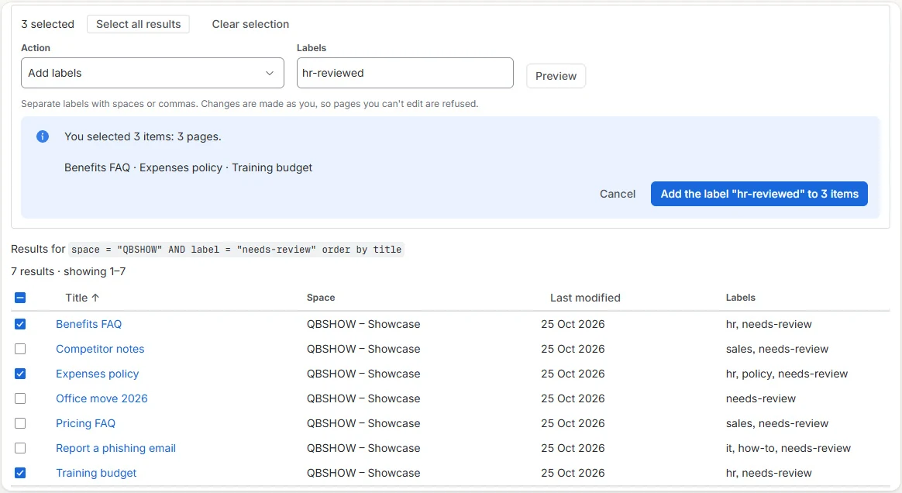

How to add labels to many Confluence pages at once
Confluence Cloud adds and removes labels one page at a time. There's no way to select several pages and label them together: the request, CONFCLOUD-17373, has been open since 2009. To label many pages at once, find them with a search and use an app that labels them all.
With Confluence on its own
Open a page. Its labels show as chips at the bottom of the page, next to Add a comment. You don't need to edit the page.
Click the labels. The Details panel opens; under Labels, press + (Add label) to open Edit labels.
Type a label in + Add label, or press × on a label to remove it. Changes apply straight away; close the dialog when you're done.
Where it falls short
One page at a time, however many pages need the label.
Automation needs a flow. Confluence Automation can label pages a search finds: a flow's Branch flow / related entities step takes a CQL search, and an Add label or Remove label action runs on each page. You build the flow, choose a trigger and run it yourself.
No preview or undo for a batch of changes, by hand or with Automation.
From any search with Query & Bulk Actions
A Confluence admin installs Query & Bulk Actions; anyone can then open it from the Apps menu.
Find the pages: by space, label, date, people, words, or pages under a parent page, with the builder, CQL or Ask in plain English.
Tick the results or press Select all (up to 500), choose Add labels (or Remove labels), type the labels and press Preview.
Confirm. Each page, blog post or file gets the label as you; pages that already have it are skipped, and pages you can't edit are refused. Undo these changes takes them off again.

Adding a label to three ticked results: the preview lists them first. Made-up demo data.
Disclosure: Kitefold makes Query & Bulk Actions, so we're not neutral. Labelling by hand is free and fine for a few pages.
Checked against Confluence Cloud in November 2026, on our test site. Confluence changes often; if something here no longer matches what you see, email support@kitefold.app and we'll update it.